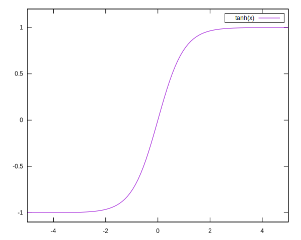
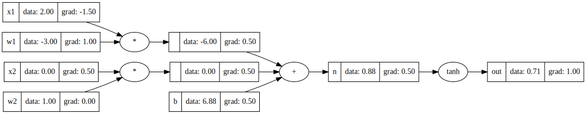
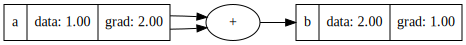
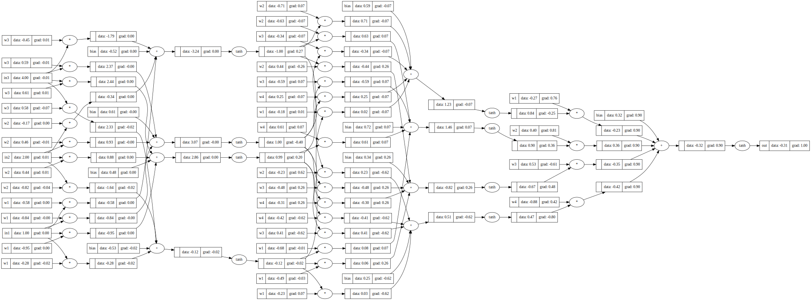

A literate Julia translation of Andrej Karpathy’s micrograd, following his video lecture. I’ll include some info boxes about Julia for Pythonista’s on the way.
Derivatives
The goal of this exercise is to compute derivatives across a neural network. The idea is that we compute a value of some very complicated function in a forward pass, and then, traversing backward through the tree, we can infer (cheaply) the gradient of the output with respect to input variables.
We start by learning about derivatives, usually defined as the rate of increment in a function in the limit where some step-size goes to zero:
\[\partial_x f(x) := \lim_{h \to 0} {f(x+h) - f(x) \over h}.\]
For functions of a single parameter, we may also write \(\partial_x f(x) = f'(x)\), allowing us to sometimes drop the gratuitous \(x\) from our notation (it’s a dummy free variable). From this definition we can compute the derivative of composite functions analytically.
Sum rule
Given \(f = u + v\), we may see from the linearity in the definition of the derivative that,
\[(u+v)' = u' + v'.\]
Chain rule
Now we have a function \(f = u \circ v\), meaning
\[f(x) = u(v(x)).\]
First of all, we need to see that inside the limit we can write,
\[\lim_{h \to 0} \Big[f'(x) = {f(x+h) - f(x) \over h}\Big],\]
therefore,
\[\lim_{h \to 0} \Big[f(x+h) = f(x) + h f'(x)\Big].\]
This also shows how the derivative approximates a function locally by a linear function. Then, writing out the definition and replacing \(v(x+h)\), we recover the definition of the derivative of \(u\), evaluated at \(y=v(x)\), if we multiply by \(v'(x)\) on both sides of the fraction.
\[\begin{align}f'(x) &= \lim_{h \to 0} {u(v(x+h)) - u(v(x)) \over h}\\ &= \lim_{h \to 0} {u(v(x) + hv'(x)) - u(v(x)) \over h}\\ &= \lim_{h \to 0} {(u(v(x) + hv'(x)) - u(v(x)))v'(x) \over hv'(x)}\\ &= \lim_{h \to 0} {u(y + \tilde{h}) - u(y) \over \tilde{h}} v'(x)\\ &= u'(v(x)) v'(x).\end{align}\]
In short,
\[(u \circ v)' = (u' \circ v) v'\]
Wikipedia gives us another nice proof, based on a different definition of differentiation. We say a function \(f\) is differentiable in \(a\) if there exists a function \(q\) such that
\[f(x) - f(a) = q(x)(x - a),\]
and \(f'(a) = q(a)\). Then, given that \(f = u \circ v\),
\[\begin{align}u(v(x)) - u(v(a)) &= q(v(x))(v(x) - v(a))\\ &= q(v(x))r(x)(x - a),\end{align}\]
Meaning that \(f'(a) = q(v(a))r(a)\), where \(q(v(a)) = u'(v(a))\) and \(r(a) = v'(a)\). Ok, with that out of the way, we can implement the first tiny version of an automatic differentating back propagation.
Computation
We define the a data structure that traces a computation.
«value»
mutable struct Value{T}
value :: T
operator :: Union{Symbol,Expr}
children :: Vector{Value{T}}
grad :: T
label :: Union{String, Nothing}
end
Value{T}(value::T, operator::Union{Expr,Symbol}, children::Vector{Value{T}}) where T =
Value(value, operator, children, zero(T), nothing)Julia methods
Julia is not an object oriented language. Instead, you can define methods on top of any type that is already defined, similar to how you would overload functions in C++. The correct implementation of a method is selected base on the types of the arguments. The pattern of defining a struct and a set of methods that take that structure as a first argument replaces most of what you would do in Python using classes.
Addition, multiplication and similar operators are also just functions, and can be called as such. The following are identical:
julia> 1 + 2 + 3
6
julia> +(1, 2, 3)
6
julia> +(1:3...)
6To overload functions in the standard library, remember to specify them with their full namespace. In the case of operators, an aditional : is required to have unambiguous syntax.
Now we add methods to perform addition and multiplication on Values. These implementations make sure that sum-nodes are joined into larger sum-nodes, likewise with product-nodes.
«value»
function Base.:+(a :: Value{T}, b :: Value{T}) where T
Value{T}(a.value + b.value, :+, [(a.operator == :+ ? a.children : a);
(b.operator == :+ ? b.children : b)])
end
function Base.:*(a :: Value{T}, b :: Value{T}) where T
Value{T}(a.value * b.value, :*, [(a.operator == :* ? a.children : a);
(b.operator == :* ? b.children : b)])
endTo create a literal value, say an input:
«value»
function literal(value :: T) where T
Value{T}(value, :const, Value{T}[])
endTo add a label to a value, we’ll have a nice |> label("x") syntax.
«value»
function label(l :: String)
v -> begin v.label = l; v end
endComposing and piping
One pattern that we may find in object oriented languages, is that of having methods that mutate an object and then return self or this. This way we can build a structure incrementally using setter methods. In Julia a similar pattern can be expressed by passing an object through a pipeline using the |> operator. Given the above two methods we can say
literal(42.0) |> label("the answer")Note the very convenient x -> f(x) syntax for defining one-liner lambda functions. Another way to define label would be:
label(l::String) = function (v::Value{T}) where T
v.label = l
v
endChoices, choices, style and more choices.
Topological sort
Computing with Values will generate, along with a result a dependency graph that shows exactly how we arrived at the result. We will be walking this graph up and down, which is why it is a usefull thing to have a function that iterates all nodes in topological order.
Topological order meaning: assign a number to each node, starting with the root node (being the final operation). We assign to its children a number one greater than the parent. If a child has multiple parents we should take the largest value. If we then evaluate the nodes from highest number down to the root, we are sure that at every stage all the necessary dependencies are already computed.
Karpathy glosses over the definition of this function. A naive implementation (like I started out with) will make the mistake of putting nodes in the wrong order. Karpathy shows a recursive algorithm. An alternative is a marking approach, where we do not add a node until all outgoing edges have been accounted for. This however, also requires us to keep track of outgoing nodes. For the moment, the recursive algorithm will do.
«topo-sort»
function topo_sort(node, children = n -> n.children, visited = nothing)
visited = isnothing(visited) ? [] : visited
Channel() do chan
if node ∉ visited
push!(visited, node)
for c in children(node)
foreach(n->put!(chan, n), topo_sort(c, children, visited))
end
put!(chan, node)
end
end
endGenerators and channels
In Python you can create a generate as follows:
def natural_numbers():
x = 1
while True:
yield x
x += 1In Julia, the easiest way to create an generator is using Channel() do syntax. Under the hood this uses a very similar system of coroutines. The nice thing is that channels work very well in a multithreading environment, so your code is immediately more generic.
natural_numbers() = Channel() do chan
x = 1
while true
put!(chan, x)
x += 1
end
endSpecial iterator: this_and_others
I supposed that, from some generality concerns, we could have combinators with more than two children. In that case, we’d like to iterate over each child, together with all their siblings (excluding the child). This is why I made an iterator that does just that this_and_others. Given a Vector{T} it yields pairs of an element and a vector containing the other elements.
«this-and-others»
function this_and_others(v :: Vector{T}) where T
Channel() do chan
for (idx, x) in enumerate(v)
put!(chan, (x, [v[1:idx-1];v[idx+1:end]]))
end
end
endDerivatives
We previously derived the sum and product rules for differentiation. When written in this form, they become rather obvious. What was all the fuss about? (verifying that our intuitions are correct, that is …)
«backpropagate»
function derive(symb :: Symbol)
derivatives[symb]
end
const derivatives = IdDict(
:* => (_, others) -> reduce(*, others),
:+ => (_, _) -> 1.0,
<<derivatives>>
)Now, it is a matter of walking the evaluation tree backward. Here we find the topo_sort routine to be useful.
«backpropagate»
<<this-and-others>>
function backpropagate(v :: Value{T}) where T
v.grad = one(T)
for n in Iterators.reverse(collect(topo_sort(v)))
for (c, others) in this_and_others(n.children)
c.grad += n.grad * derive(n.operator)(c.value, map(x -> x.value, others))
end
end
endNote, that a value may be used in several subexpressions, creating a diamond dependency diagram. In such a case, we want to add all contributions from different branches. This is why we find c.grad += ... there.
First example
file:build/example1.jl
using MicroGrad: literal, label, backpropagate
a = literal(2.0) |> label("a")
b = literal(3.0) |> label("b")
c = literal(10.0) |> label("c")
d = a * b + c * a |> label("d")
println("$(d.label) = $(d.value)")
backpropagate(d)
println("∂_$(a.label) d = $(a.grad)")d = 26.0
∂_a d = 13.0
Plotting tree in graphviz
Julia has a module for interaction with Graphviz, but it requires input in dot language, so this module won’t help us here. I’ve created another package called GraphvizDotLang.jl.
«visualize»
function visualize(v::Value{T}) where T
g = digraph(; rankdir="LR")
for n in topo_sort(v)
objid = repr(hash(n))
objlabel = (isnothing(n.label) ? "" : n.label)
reclabel = @sprintf "{ %s | data: %0.2f | grad: %0.2f }" objlabel n.value n.grad
g |> node("dat_" * objid; shape="record", label=reclabel)
if (n.operator !== :const)
g |> node("op_" * objid; label="$(n.operator)") |>
edge("op_" * objid, "dat_$objid")
end
for c in n.children
childid = repr(hash(c))
g |> edge("dat_$childid", (n.operator !== :const ? "op_" : "dat_") * objid)
end
end
g
endfile:build/viz-example1.jl
<<example1>>
using MicroGrad: visualize
using GraphvizDotLang: save
save(visualize(d), ARGS[1])
A Neuron
The neuron takes many inputs and then computes a weighted sum over those inputs, and passes the results through an activation function:
\[f(x_i) = {\rm sig} \Big[ \sum w_i x_i + b \Big].\]
In this case, the activation function is some sigmoid.

«value»
function Base.tanh(v::Value{T}) where T
Value{T}(tanh(v.value), :tanh, [v])
end«derivatives»
:tanh => (value, _) -> Base.Math.sech(value)^2,file:build/viz_example2.jl
using MicroGrad: literal, label, backpropagate, visualize
using GraphvizDotLang: save
x1 = literal(2.0) |> label("x1")
x2 = literal(0.0) |> label("x2")
w1 = literal(-3.0) |> label("w1")
w2 = literal(1.0) |> label("w2")
b = literal(6.8813735870195432) |> label("b")
n = x1*w1 + x2*w2 + b |> label("n")
o = tanh(n) |> label("out")
backpropagate(o)
save(visualize(o), ARGS[1])
More derivatives
We want more derivatives!
«derivatives»
:inv => (x, _) -> -1/x^2,
:log => (x, _) -> 1/x,
:exp => (x, _) -> exp(x),
:negate => (_, _) -> -1.0,Now we can add more operators.
«value»
function Base.convert(::Type{Value{T}}, x :: T) where T
literal(x)
end
function vmap(f, operator::Symbol, value::Value{T}) where T
Value{T}(f(value.value), operator, [value])
end
Base.:*(s::U, a::Value{T}) where {T, U <: Number} = convert(Value{T}, convert(T,s)) * a
Base.inv(a::Value{T}) where T = vmap(inv, :inv, a)
Base.:/(a::Value{T}, b::Value{T}) where T = a * inv(b)
Base.exp(a::Value{T}) where T = vmap(exp, :exp, a)
negate(a::Value{T}) where T = vmap(-, :negate, a)
Base.:-(a::Value{T}) where T = negate(a)
Base.:-(a::Value{T}, b::Value{T}) where T = a + negate(b)
Base.:-(a::Value{T}, b::U) where {T, U <: Number} = a - literal(convert(T,b))
Base.:+(a::Value{T}, b::U) where {T, U <: Number} = a + literal(convert(T,b))
Base.:^(a::Value{T}, b::U) where {T, U <: Integer} = Value{T}(a.value^b, :(x^$(b)), [a])Now we could say \(\tanh x = (\exp(2x) - 1) / (\exp(2x) + 1)\)
file:build/viz_example4.jl
using MicroGrad: literal, label, backpropagate, visualize
using GraphvizDotLang: save
mytanh(x) = begin y = exp(2*x); (y - 1) / (y + 1) end
x1 = literal(2.0) |> label("x1")
x2 = literal(0.0) |> label("x2")
w1 = literal(-3.0) |> label("w1")
w2 = literal(1.0) |> label("w2")
b = literal(6.8813735870195432) |> label("b")
n = x1*w1 + x2*w2 + b |> label("n")
o = mytanh(n) |> label("out")
backpropagate(o)
save(visualize(o), ARGS[1])
I also specify derivatives for the generic case of x -> x^n.
«backpropagate»
function derive(expr :: Expr)
@match expr begin
Expr(:call, :^, :x, n) => (x, _) -> n * x^(n-1)
Expr(expr_type, _...) => error("Unknown expression $(expr) of type $(expr_type)")
end
endBuilding a neural net
Neuron
«neuron»
struct Neuron{T}
weights :: Vector{Value{T}}
bias :: Value{T}
end
Neuron{T}(n::Int) where T <: Real =
Neuron{T}(
[literal(rand() * 2 - 1) |> label("w$(i)") for i in 1:n],
literal(rand() * 2 - 1) |> label("bias"))
function (n::Neuron{T})(x::Vector{Value{T}}) where T <: Real
tanh(sum(n.weights .* x; init = n.bias))
endLayer
«layer»
struct Layer{T}
neurons :: Vector{Neuron{T}}
end
Layer{T}(n_in::Int, n_out::Int) where T <: Real =
Layer{T}([Neuron{T}(n_in) for _ in 1:n_out])
function (l::Layer{T})(x::Vector{Value{T}}) where T <: Real
[n(x) for n in l.neurons]
endMulti-layer perceptron
«mlp»
struct MLP{T}
layers :: Vector{Layer{T}}
end
pairs(it) = zip(it[1:end-1], it[2:end])
MLP{T}(n_in::Int, n_out::Vector{Int}) where T <: Real =
MLP{T}([Layer{T}(s...) for s in pairs([n_in; n_out])])
function (mlp::MLP{T})(x::Vector{Value{T}}) where T <: Real
for l in mlp.layers
x = l(x)
end
x
end
function (mlp::MLP{T})(x::Vector{T}) where T <: Real
mlp(literal.(x))
end
function errsqr_loss(y_ref, y)
sum((y_ref .- y).^2)
endfile:build/neural_net.jl
using MicroGrad: literal, label, backpropagate, MLP, visualize
using GraphvizDotLang: save
f = MLP{Float64}(3, [4, 4, 1])
y = f([literal(1.0) |> label("in1"),
literal(2.0) |> label("in2"),
literal(4.0) |> label("in3")])[1] |> label("out")
backpropagate(y)
save(visualize(y), ARGS[1])
Enumerate parameters
To make the model learn, we need to have access to all the parameters in the model.
«neuron»
function parameters(n :: Neuron{T}) where T
[n.weights; n.bias]
end«layer»
function parameters(l :: Layer{T}) where T
vcat(parameters.(l.neurons)...)
end«mlp»
function parameters(mlp :: MLP{T}) where T
vcat(parameters.(mlp.layers)...)
endWrite a loss function
«learn»
function stop_after_n(n)
function (i, _, loss)
i % 10 == 0 && println("$(i:4) $(loss)")
i >= n
end
end
function learn(nn, xs, y_reference; lossfunc=errsqr_loss, stop=stop_after_n(100), step=0.05)
ps = parameters(nn)
println("Network with $(length(ps)) free parameters.")
i = 0
prev = Inf
while true
y_prediction = [nn(literal.(x))[1] for x in xs]
loss = lossfunc(y_prediction, y_reference)
if stop(i, prev, loss.value)
break
end
prev = loss.value
backpropagate(loss)
for p in ps
p.value -= p.grad * step
p.grad = 0
end
i += 1
end
endfile:build/learn.jl
using MicroGrad: MLP, literal, learn
function main()
f = MLP{Float64}(3, [4, 4, 1])
xs = [ 2.0 3.0 -1.0;
3.0 -1.0 0.5;
0.5 1.0 1.0;
1.0 1.0 -1.0 ] |> eachrow |> collect
ys = literal.([ 1.0, -1.0, -1.0, 1.0 ])
learn(f, xs, ys; step=0.1)
println([f(literal.(x))[1].value for x in xs])
end
main()Network with 41 free parameters.
0:4 4.401224265066642
10:9 0.10680327204876786
20:19 0.04295424915398209
30:29 0.02649130300202249
40:39 0.01903549059850462
50:49 0.014806175731354152
60:59 0.012089874628403451
70:69 0.010201530459081717
80:79 0.008814492075746905
90:89 0.0077535471855444535
100:99 0.006916403797174819
[0.9576062369652699, -0.9440254868363128, -0.9815653016464002, 0.9594267523406128]
Appendix A: MicroGrad module
file:src/MicroGrad.jl
module MicroGrad
using GraphvizDotLang: digraph, node, edge, attr
using Printf: @sprintf
using MLStyle: @match
<<value>>
<<topo-sort>>
<<backpropagate>>
<<visualize>>
<<neuron>>
<<layer>>
<<mlp>>
<<learn>>
end